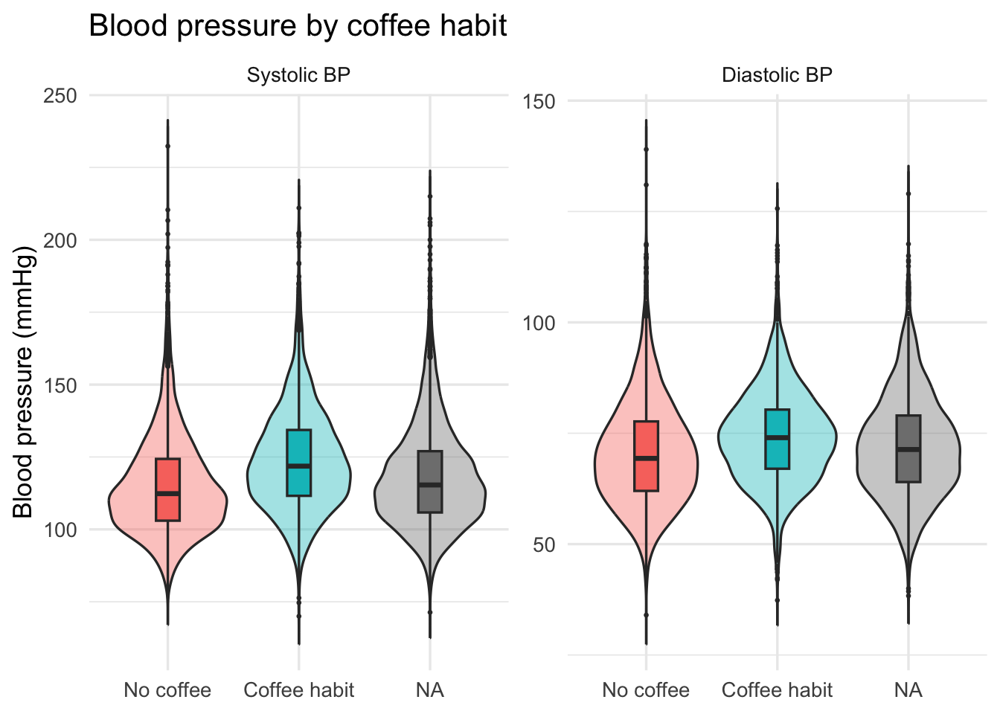
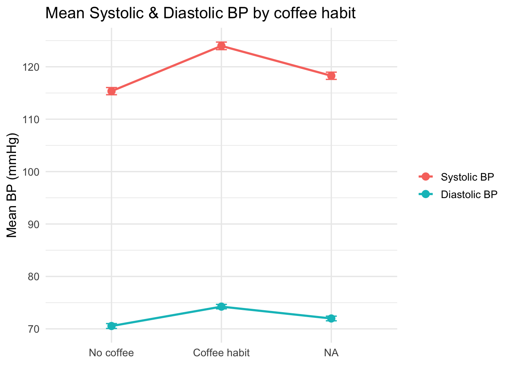
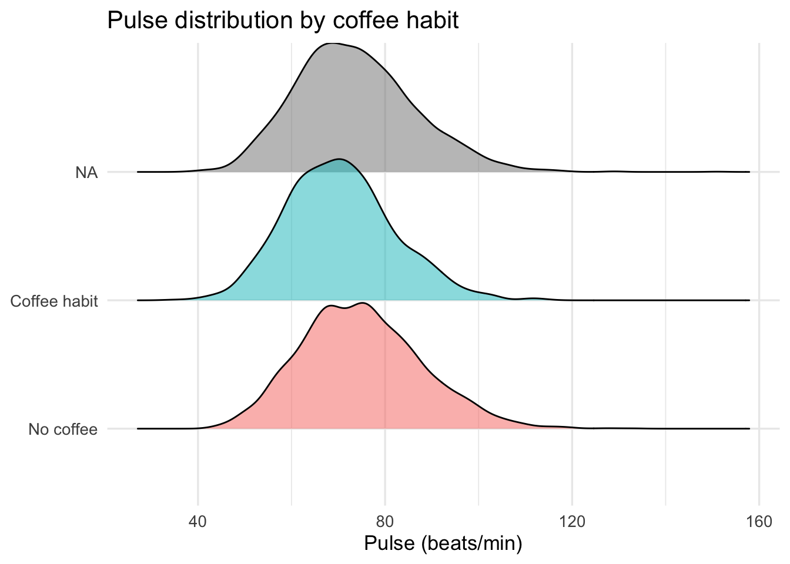
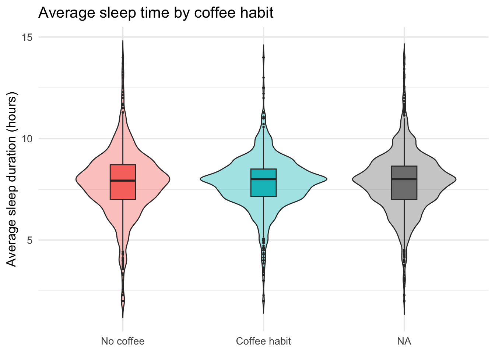
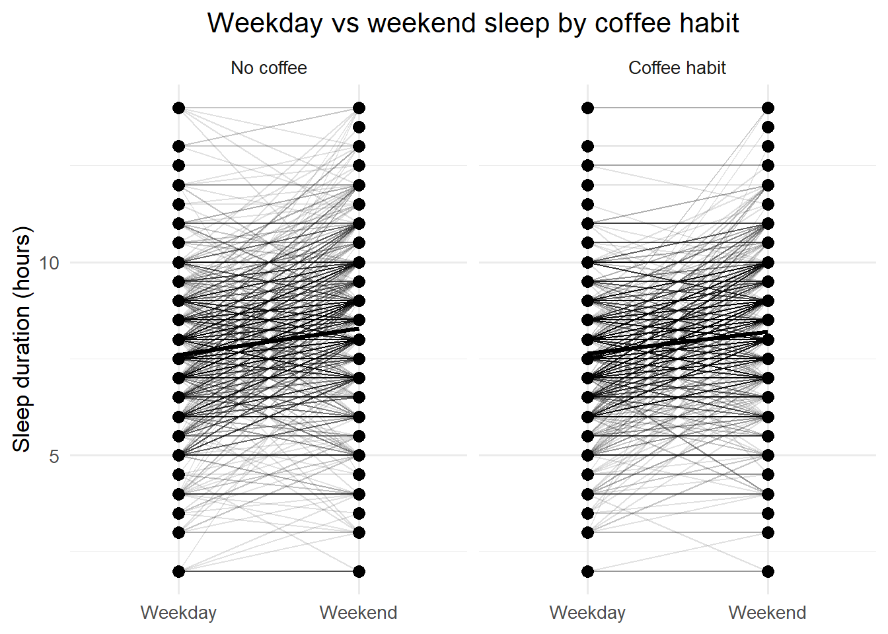

bp_long <- bp_sleep_df |>
select(seqn, coffee_group, sbp, dbp) |>
pivot_longer(cols = c(sbp, dbp),
names_to = "bp_type",
values_to = "bp_value") |>
mutate(
bp_type = factor(
bp_type,
levels = c("sbp", "dbp"),
labels = c("Systolic BP", "Diastolic BP")
)
)
gg_bp_violin <- ggplot(bp_long,
aes(x = coffee_group,
y = bp_value,
fill = coffee_group)) +
geom_violin(alpha = 0.4, trim = FALSE) +
geom_boxplot(width = 0.18, outlier.size = 0.5) +
facet_wrap(~ bp_type, scales = "free_y") +
labs(x = NULL, y = "Blood pressure (mmHg)",
title = "Blood pressure by coffee habit") +
theme_minimal(base_size = 13) +
theme(legend.position = "none")
gg_bp_violin## Warning: Removed 8830 rows containing non-finite outside the scale range
## (`stat_ydensity()`).## Warning: Removed 8830 rows containing non-finite outside the scale range
## (`stat_boxplot()`). The distributions of systolic and diastolic blood pressure among groups that consumed coffee are shown in this figure. Violin shapes show the whole density and range of values, and integrated boxplots make it easy to compare medians and interquartile ranges. There are just little changes between the groups; for example, those who regularly drink coffee had somewhat higher systolic readings. It seems that missingness is not systematic, as the NA group exhibits behavior that is consistent with the other categories. Potential, however modest, correlations between blood pressure and regular coffee use are efficiently brought to light by this depiction.
bp_summary <- bp_sleep_df |>
group_by(coffee_group) |>
summarise(
mean_sbp = mean(sbp, na.rm = TRUE),
se_sbp = sd(sbp, na.rm = TRUE) / sqrt(sum(!is.na(sbp))),
mean_dbp = mean(dbp, na.rm = TRUE),
se_dbp = sd(dbp, na.rm = TRUE) / sqrt(sum(!is.na(dbp)))
) |>
pivot_longer(
cols = -coffee_group,
names_to = c("metric", "bp_type"),
names_sep = "_"
) |>
pivot_wider(
names_from = metric,
values_from = value
) |>
mutate(
bp_type = factor(
bp_type,
levels = c("sbp", "dbp"),
labels = c("Systolic BP", "Diastolic BP")
)
)
gg_bp_mean_line <-
ggplot(bp_summary, aes(x = coffee_group, y = mean, color = bp_type, group = bp_type)) +
geom_point(size = 3) +
geom_line(linewidth = 1) +
geom_errorbar(aes(ymin = mean - 1.96 * se, ymax = mean + 1.96 * se), width = 0.1) +
labs(x = NULL, y = "Mean BP (mmHg)",
color = NULL,
title = "Mean Systolic & Diastolic BP by coffee habit") +
theme_minimal(base_size = 13)
gg_bp_mean_line Displayed here with 95% confidence intervals are the mean diastolic and systolic blood pressure readings for the whole cohort. The group that regularly drinks coffee had somewhat higher systolic blood pressure than the group that does not, but there is no change in diastolic blood pressure. Since the confidence intervals for different groups overlap, it’s possible that the observed changes in means may not reflect significant impacts. In addition to the distributions given for individuals, this graphic gives a clear picture of the population as a whole.
gg_pulse_ridge <-
ggplot(bp_sleep_df, aes(x = pulse, y = coffee_group, fill = coffee_group)) +
geom_density_ridges(alpha = 0.5, scale = 1.1) +
labs(x = "Pulse (beats/min)", y = NULL,
title = "Pulse distribution by coffee habit") +
theme_minimal(base_size = 13) +
theme(legend.position = "none")
gg_pulse_ridge## Picking joint bandwidth of 2.29## Warning: Removed 4415 rows containing non-finite outside the scale range
## (`stat_density_ridges()`). The ridgeline density plot visualizes pulse-rate distributions across coffee habits. While the overall shapes are similar, the coffee-habit group appears to trend slightly higher in pulse rate, though the overlap between groups is substantial. This plot effectively demonstrates distributional differences without relying on summary statistics and provides an intuitive sense of how pulse varies across the cohort.
gg_sleep_violin <-
ggplot(bp_sleep_df, aes(x = coffee_group, y = sleep_avg, fill = coffee_group)) +
geom_violin(alpha = 0.4, trim = FALSE) +
geom_boxplot(width = 0.18, outlier.size = 0.5) +
labs(x = NULL, y = "Average sleep duration (hours)",
title = "Average sleep time by coffee habit") +
theme_minimal(base_size = 13) +
theme(legend.position = "none")
gg_sleep_violin## Warning: Removed 3574 rows containing non-finite outside the scale range
## (`stat_ydensity()`).## Warning: Removed 3574 rows containing non-finite outside the scale range
## (`stat_boxplot()`). This visualization shows the distribution of average daily sleep time across coffee-consumption categories. The central tendencies differ only slightly, with coffee-habit individuals sleeping marginally less on average. The overall shape and spread are similar across categories, suggesting that habitual coffee intake is not strongly related to average sleep duration. The combination of violin and boxplot elements provides both distributional context and robust summary measures.
sleep_long <- bp_sleep_df |>
select(seqn, coffee_group, sleep_weekday, sleep_weekend) |>
pivot_longer(
cols = c(sleep_weekday, sleep_weekend),
names_to = "day_type",
values_to = "sleep_hours"
) |>
mutate(
day_type = factor(
day_type,
levels = c("sleep_weekday", "sleep_weekend"),
labels = c("Weekday", "Weekend")
)
)
gg_sleep_paired <-
ggplot(sleep_long, aes(x = day_type, y = sleep_hours, group = seqn)) +
geom_line(alpha = 0.12) +
stat_summary(fun = mean, geom = "line", aes(group = 1), linewidth = 1.2, color = "black") +
stat_summary(fun = mean, geom = "point", size = 3, color = "black") +
facet_wrap(~ coffee_group) +
labs(x = NULL, y = "Sleep duration (hours)",
title = "Weekday vs weekend sleep by coffee habit") +
theme_minimal(base_size = 13)
gg_sleep_paired## Warning: Removed 7091 rows containing non-finite outside the scale range
## (`stat_summary()`).
## Removed 7091 rows containing non-finite outside the scale range
## (`stat_summary()`).## Warning: Removed 7091 rows containing missing values or values outside the scale range
## (`geom_line()`). Individual differences in sleep duration on weekdays and weekends are shown by this paired-line plot. People in every coffee group get more shut-eye on weekends, and the size of the difference between weekday and weekend sleep is about the same. Individual variability is shown by the dense cluster of light gray lines, while the group-average pattern is captured by the overlay black summary line. This graph shows that the difference in sleep between the weekdays and weekends is unaffected by coffee use.